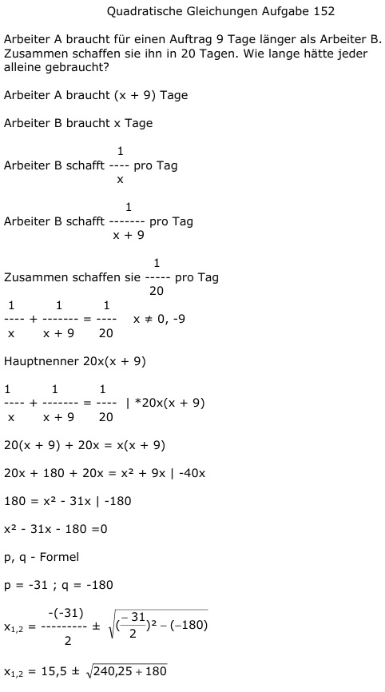

Aufgabe 152 Arbeiter A braucht für einen Auftrag 9 Tage länger als Arbeiter B. Zusammen schaffen sie ihn in 20 Tagen. Wie lange hätte jeder alleine gebraucht? Arbeiter A braucht (x + 9) Tage Arbeiter B braucht x Tage 1 Arbeiter B schafft ---- pro Tag x 1 Arbeiter B schafft ------- pro Tag x + 9 1 Zusammen schaffen sie ----- pro Tag 20 1 1 1 --- + ------- = ---- x ≠ 0, -9 x x + 9 20 Hauptnenner 20x(x + 9) 1 1 1 --- + ------- = ---- |*20x(x + 9) x x + 9 20 20(x + 9) + 20x = x(x + 9) 20x + 180 + 20x = x2 + 9x |-40x 180 = x2 - 31x | -180 x2 - 31x - 180 =0 p, q - Formel p = -31 ; q = -180  x1,2 = 15,5 ± 20,5 x1 = 15,5 + 20,5 = 36 Tage braucht Arbeiter B alleine 36 Tage + 9 Tage = 45 Tage braucht Arbeiter A alleine x2 = 15,5 - 20,5 = -5 keine Lösung, negative Tage